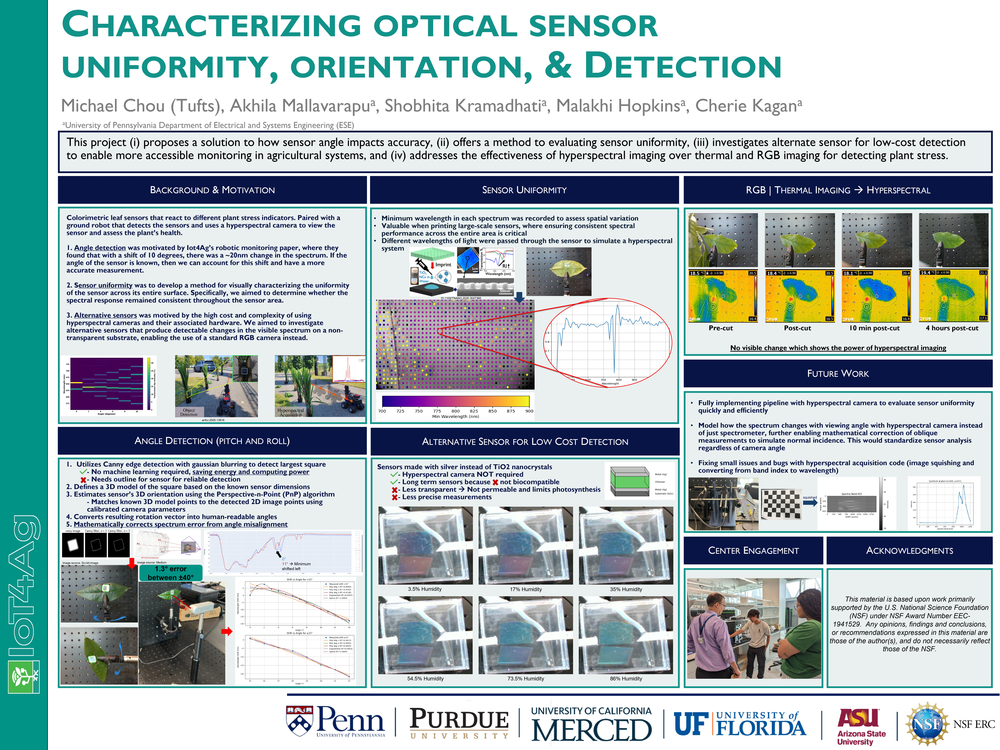

Leaf Sensor Detection
NSF IoT4Ag REU @ University of Pennsylvania
Project Summary
This was my research at University of Pennsylvania's IoT4Ag REU, funded by the National Science Foundation. The center focuses on using technology for agricultural efficiency. I developed an automated hyperspectral imaging pipeline and proposed a calibration project that extended sensor measurement capability from 0° to ±40° with only 1.3° error.
Research Poster

Research poster presented at IoT4Ag REU symposium
My Contributions
Hyperspectral Imaging Pipeline
- Automated pipeline in Python using Ximea API
- Deployed on device ML on NVIDIA Jetson Xavier NX
- Built for "The Beast" self-driving agricultural robot
Angle Calibration Project
- Proposed and led project to correct angle detection errors
- Extended measurement from 0° to ±40°
- Achieved only 1.3° error
Impact
The calibration model enabled more reliable analysis of optical metasurface-based colorimetric leaf sensors. My work also contributed to characterizing sensor uniformity, evaluating alternative low-cost sensor substrates, and improving the robustness of the full hyperspectral acquisition system.
Project Continuation
In terms of the hyperspectral camera, I couldn't fully get it working during the REU timeframe, but the lab found a PhD candidate to inherit and continue this project.